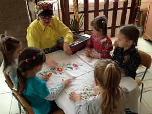

У каждого человека есть свое хобби. Кто-то поет, кто-то играет на музыкальном инструменте, а кто-то любит делать
что-нибудь своими руками. Но я - очень разносторонний человек и мне нравятся разные вещи.
Я люблю видео на Ютубе. Я смотрю многих блогеров, мне это нравится, потому что они такие же, как и я. Блогеры
говорят о том, что интересно мне, я вижу много разных развлечений и дел, которые я могу повторить.
Блогеры очень сильно повлияли на меня. Например, я поняла, что не нужно стесняться своего творчества, для него
обязательно найдутся свои поклонники. Я стараюсь развивать свою речь, чтобы меня тоже было также интересно
слушать.
Благодаря урокам на Ютубе я научилась многим вещам: вышивать, вязать, печь торты...
Кроме этого у меня ксть врожденные таланты: я умею петь, танцевать, рисовать, играть на скрипке и многое другое.
Я на кухне

За вышивкой

Я посещаю Дом народных ремесел. Там я научилась вышивать рушники.
В нашем коллективе вышивальщиц очень много интересных людей. Со многими девочками я дружу.
Рисование как хобби
Что можно сказать о моем самом любимомхобби? Это, скорее всего, то, чем я занимаюсь с огромным удовольствием
в свободное от занятий и домашних дел время.
И это очень интересное хобби и увлечение - рисование!
Начала рисовать я в 7 лет. Сначала мои рисунки заметили родители. Им очень понравилось как я рисую и они
решили отдать меня в художественную школу.
Рисование помогает выражать свои эмоции, настроение. В психологии даже есть специальная терапия, которая
помогает вылечить человека благодаря выражению эмоций на листке.